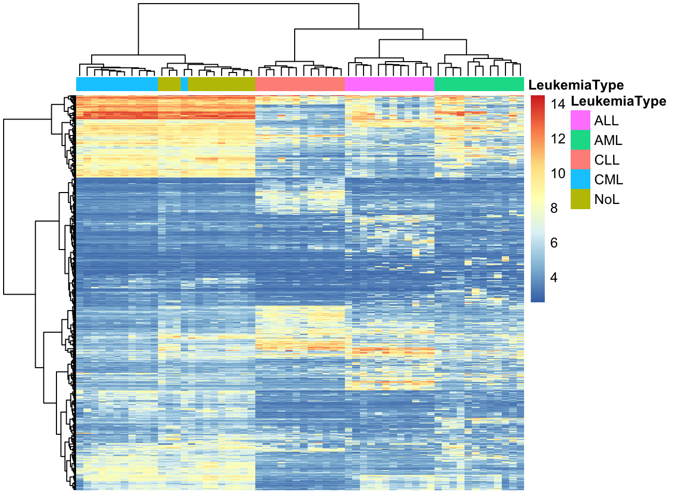
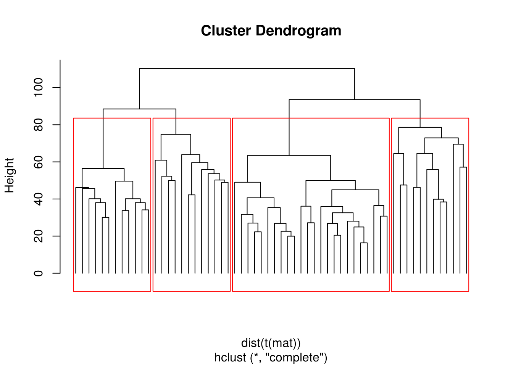
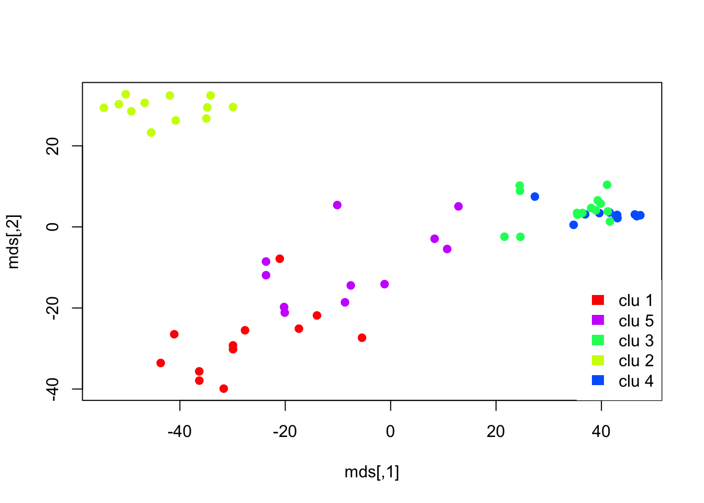
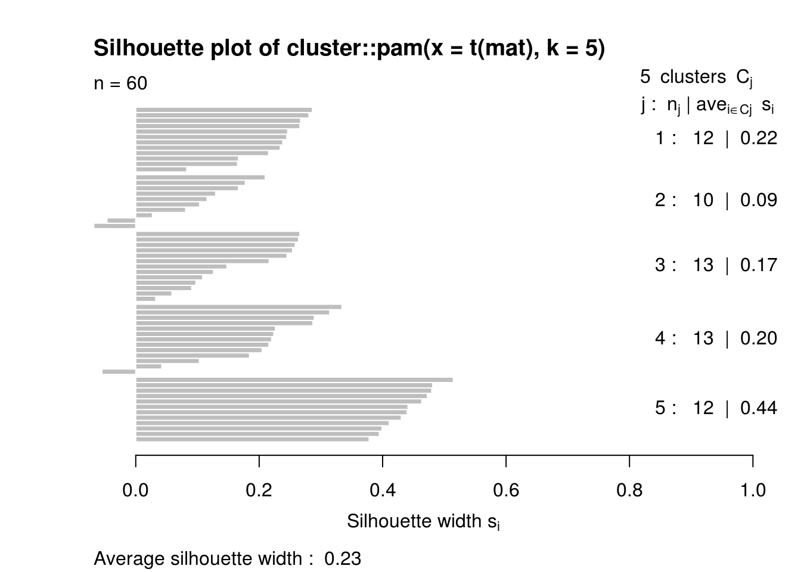
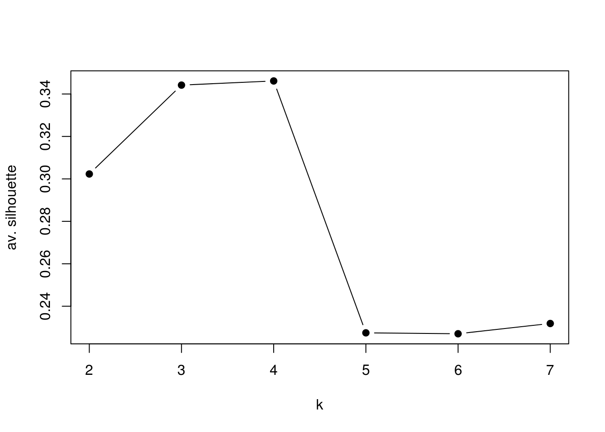
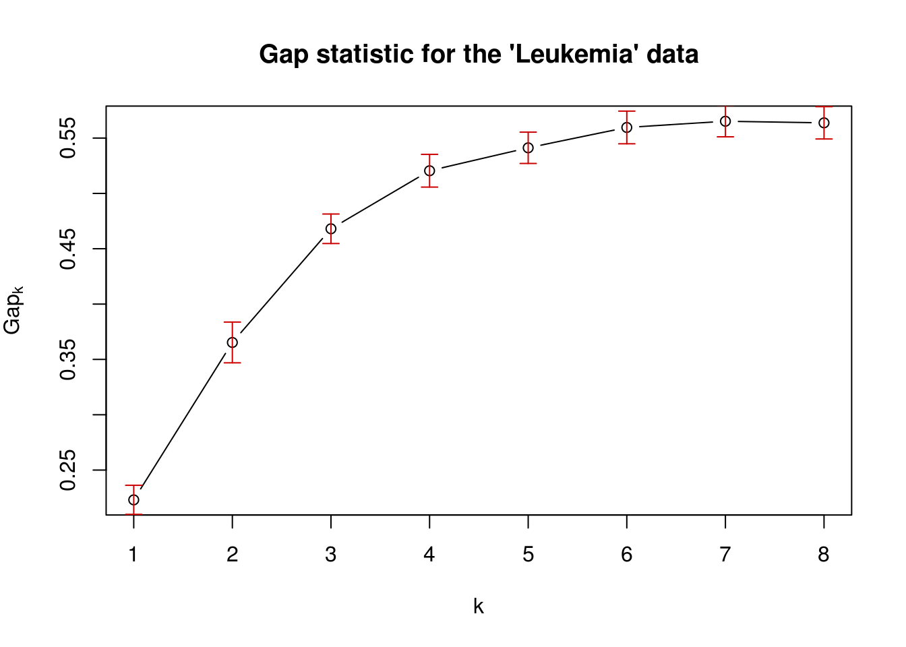

In genomics, we would very frequently want to assess how our samples relate to each other. Are our replicates similar to each other? Do the samples from the same treatment group have the similar genome-wide signals ? Do the patients with similar diseases have similar gene expression profiles ? Take the last question for example. We need to define a distance or similarity metric between patients’ expression profiles and use that metric to find groups of patients that are more similar to each other than the rest of the patients. This, in essence, is the general idea behind clustering. We need a distance metric and a method to utilize that distance metric to find self-similar groups. Clustering is a ubiquitous procedure in bioinformatics as well as any field that deals with high-dimensional data. It is very likely every genomics paper containing multiple samples have some sort of clustering. Due to this ubiquity and general usefulness, it is an essential technique to learn.
The first required step for clustering is the distance metric. This is simply a measurement of how similar gene expressions to each other are. There are many options for distance metrics and the choice of the metric is quite important for clustering. Consider a simple example where we have four patients and expression of three genes measured. Which patients look similar to each other based on their gene expression profiles ?
| IRX4 | OCT4 | PAX6 | |
|---|---|---|---|
| patient1 | 11 | 10 | 1 |
| patient2 | 13 | 13 | 3 |
| patient3 | 2 | 4 | 10 |
| patient4 | 1 | 3 | 9 |
It may not be obvious from the table at first sight but if we plot the gene expression profile for each patient, we will see that expression profiles of patient 1 and patient 2 is more similar to each other than patient 3 or patient 4.
FIGURE 4.19: Gene expression values for different patients. Certain patients have similar gene expression values to each other.
But how can we quantify what see by eye ? A simple metric for distance between gene expression vectors between a given patient pair is the sum of absolute difference between gene expression values This can be formulated as follows: \(d_{AB}={\sum _{i=1}^{n}|e_{Ai}-e_{Bi}|}\), where \(d_{AB}\) is the distance between patient A and B, and \(e_{Ai}\) and \(e_{Bi}\) expression value of the \(i\)th gene for patient A and B. This distance metric is called “Manhattan distance” or “L1 norm”.
Another distance metric using sum of squared distances and taking a square root of resulting value, that can be formulaized as: \(d_{AB}={{\sqrt {\sum _{i=1}^{n}(e_{Ai}-e_{Bi})^{2}}}}\). This distance is called “Euclidean Distance” or “L2 norm”. This is usually the default distance metric for many clustering algorithms. due to squaring operation values that are very different get higher contribution to the distance. Due to this, compared to Manhattan distance it can be more affected by outliers but generally if the outliers are rare this distance metric works well.
The last metric we will introduce is the “correlation distance”. This is simply \(d_{AB}=1-\rho\), where \(\rho\) is the pearson correlation coefficient between two vectors, in our case those vectors are gene expression profiles of patients. Using this distance the gene expression vectors that have a similar pattern will have a small distance whereas when the vectors have different patterns they will have a large distance. In this case, the linear correlation between vectors matters, the the scale of the vectors might be different.
Now let’s see how we can calculate these distance in R. First, we have our gene expression per patient table.
## IRX4 OCT4 PAX6
## patient1 11 10 1
## patient2 13 13 3
## patient3 2 4 10
## patient4 1 3 9Next, we calculate the distance metrics using dist function and 1-cor().
## patient1 patient2 patient3
## patient2 7
## patient3 24 27
## patient4 25 28 3## patient1 patient2 patient3
## patient2 4.123
## patient3 14.071 15.843
## patient4 14.595 16.733 1.732## patient1 patient2 patient3
## patient2 0.004129
## patient3 1.988522 1.970725
## patient4 1.988522 1.970725 0.000000Before we proceed to the clustering, one more thing we need to take care. Should we normalize our data ? Scale of the vectors in our expression matrix can affect the distance calculation. Gene expression tables are usually have some sort of normalization, so the values are in comparable scales. But somehow if a gene’s expression values were on much higher scale than the other genes, that gene will effect the distance more than other when using Euclidean or Manhattan distance. If that is the case we can scale the variables.The traditional way of scaling variables is to subtract their mean, and divide by their standard deviation, this operation is also called “standardization”. If this is done on all genes, each gene will have the same affect on distance measures. The decision to apply scaling ultimately depends on our data and what you want to achieve. If the gene expression values are previously normalized between patients, having genes that dominate the distance metric could have a biological meaning and therefore it may not be desireable to further scale variables. In R, the standardization is done via scale() function. Here we scale the gene expression values.
## IRX4 OCT4 PAX6
## patient1 11 10 1
## patient2 13 13 3
## patient3 2 4 10
## patient4 1 3 9## IRX4 OCT4 PAX6
## patient1 0.6933 0.5213 -1.0734
## patient2 1.0195 1.1468 -0.6214
## patient3 -0.7748 -0.7298 0.9604
## patient4 -0.9379 -0.9383 0.7344
## attr(,"scaled:center")
## IRX4 OCT4 PAX6
## 6.75 7.50 5.75
## attr(,"scaled:scale")
## IRX4 OCT4 PAX6
## 6.131 4.796 4.425This is one of the most ubiqutous clustering algorithms. Using this algorithm you can see the relationship of individual data points and relationships of clusters. This is achieved succesively joining small clusters to each other based on the intercluster distance. Eventually, you get a tree structure or a dendrogram that shows the relationship between the individual data points and clusters. The height of the dendrogram is the distance between clusters. Here we can show how to use this on our toy data set from four patients. The base function in R to do hierarchical clustering in hclust(). Below, we apply that function on Euclidean distances between patients.
FIGURE 4.20: Dendrogram of distance matrix
In the above code snippet, we have used method="complete" argument without explaining it. The method argument defines the criteria that directs how the sub-clusters are merged. During clustering starting with single-member clusters, the clusters are merged based on the distance between them. There are many different ways to define distance between clusters and based on which definition you use the hierarchical clustering results change. So the method argument controls that. There are a couple of values this argument can take, we list them and their description below:
In real life, we would get expression profiles from thousands of genes and we will typically have many more patients than our toy example. One such data set is gene expression values from 60 bone marrow samples of patients with one of the four main types of leukemia (ALL, AML, CLL, CML) or no-leukemia controls. We trimmed that data set down to top 1000 most variable genes to be able to work with it easier and in addition genes that are not very variable do not contribute much to the distances between patients. We will now use this data set to cluster the patients and display the values as a heatmap and a dendrogram. The heatmap shows the expression values of genes across patients in a color coded manner. The heatmap function, pheatmap(), we will use performs the clustering as well. The matrix that contains gene expressions has the genes in the rows and the patients in the columns. Therefore, we will also use a column-side color code to mark the patients based on their leukemia type. For the hierarchical clustering, we will use Ward’s method designated by clustering_method argument to pheatmap() function.
library(pheatmap)
expFile=system.file("extdata","leukemiaExpressionSubset.rds",package="compGenomRData")
mat=readRDS(expFile)
# set the leukemia type annotation for each sample
annotation_col = data.frame(
LeukemiaType =substr(colnames(mat),1,3))
rownames(annotation_col)=colnames(mat)
pheatmap(mat,show_rownames=FALSE,show_colnames=FALSE,annotation_col=annotation_col,scale = "none",clustering_method="ward.D2",clustering_distance_cols="euclidean")
As we can observe in the heatmap each cluster has a distinct set of expression values. The main clusters almost perfectly distinguish the leukemia types. Only one CML patient is clustered as a non-leukemia sample. This could mean that gene expression profiles are enough to classify leukemia type. More detailed analysis and experiments are needed to verify that but by looking at this exploratory analysis we can decide where to focus our efforts next.
The example above seems like a clear cut example where we can pick by eye clusters from the dendrogram. This is mostly due to the Ward’s method where compact clusters are preffered. However, as it is usually the case we do not have patient labels and it would be difficult to tell which leaves (patients) in the dendrogram we should consider as part of the same cluster. In other words, how deep we should cut the dendrogram so that every patient sample still connected via the remaining sub-dendrograms constitute clusters. The cutree() function provides the functionality to output either desired number of clusters or clusters obtained from cutting the dendrogram at a certain height. Below, we will cluster the patients with hierarchical clustering using the default method “complete linkage” and cut the dendrogram at a certain height. In this case, you will also observe that, changing from Ward’s distance to complete linkage had an effect on clustering. Now two clusters that are defined by Ward’s distance are closer to each other and harder to separate from each other.
hcl=hclust(dist(t(mat)))
plot(hcl,labels = FALSE, hang= -1)
rect.hclust(hcl, h = 80, border = "red")
clu.k5=cutree(hcl,k=5) # cut tree so that there are 4 clusters
clu.h80=cutree(hcl,h=80) # cut tree/dendrogram from height 80
table(clu.k5) # number of samples for each cluster## clu.k5
## 1 2 3 4 5
## 12 3 9 12 24Apart from the arbitrary values for the height or the number of the clusters, how can we define clusters more systematically? As this is a general question, we will show later how to decide the optimal number of clusters later in this chapter.
Another, very common clustering algorithm is k-means.This method divides or partitions the data points, our working example patients, into a pre-determined, “k” number of clusters. Hence, this type of methods are generally called “partioning” methods. The algorithm is initialized with randomly choosen \(k\) centers or centroids. In a sense, a centroid is a data point with multiple values. In our working example, it is a hypothetical patient with gene expression values. But in the initialization phase, those gene expression values are choosen randomly within the boundaries of the gene expression distributions from real patients. As the next step in the algorithm, each patient is assigned to the closest centroid and in the next iteration centroids are set to the mean of values of the genes in the cluster. This process of setting centroids and assigning patients to the clusters repeats itself until sum of squared distances to cluster centroids is minimized.
As you might see, the cluster algorithm starts with random initial centroids. This feature might yield different results for each run of the algorithm. We will know show how to use k-means method on the gene expression data set. We will use set.seed() for reproducbility. In the wild, you might want to run this algorithm multiple times to see if your clustering results are stable.
set.seed(101)
# we have to transpore the matrix t()
# so that we calculate distances between patients
kclu=kmeans(t(mat),centers=5)
# number of data points in each cluster
table(kclu$cluster)##
## 1 2 3 4 5
## 12 12 14 11 11Now let us check the percentage of each leukemia type in each cluster. We can visualize this as a table. Looking at the table below, we see that each of the 5 clusters are predominantly representing one of the 4 leukemia types or the control patients without leukemia.
type2kclu = data.frame(
LeukemiaType =substr(colnames(mat),1,3),
cluster=kclu$cluster)
table(type2kclu)## cluster
## LeukemiaType 1 2 3 4 5
## ALL 12 0 0 0 0
## AML 0 0 1 0 11
## CLL 0 12 0 0 0
## CML 0 0 1 11 0
## NoL 0 0 12 0 0Another related and maybe more robust algorithm is called “k-medoids” clustering. The procedure is almost identical to k-means clustering with a couple of differences. In this case, centroids choosen are real data points in our case patients, and the metric we are trying to optimize in each iteration is based on manhattan distance to the centroid. In k-means this was based on sum of squared distances so euclidean distance. Below we are showing how to use k-medoids clustering function pam() from the cluster package.
kmclu=cluster::pam(t(mat),k=5) # cluster using k-medoids
# make a data frame with Leukemia type and cluster id
type2kmclu = data.frame(
LeukemiaType =substr(colnames(mat),1,3),
cluster=kmclu$cluster)
table(type2kmclu)## cluster
## LeukemiaType 1 2 3 4 5
## ALL 12 0 0 0 0
## AML 0 10 1 1 0
## CLL 0 0 0 0 12
## CML 0 0 0 12 0
## NoL 0 0 12 0 0We can not visualize the clustering from partioning methods with a tree like we did for hierarchical clustering. Even if we can get the distances between patients the algorithm does not return the distances between clusters out of the box. However, if we had a way to visualize the distances between patients in 2 dimensions we could see the how patients and clusters relate each other. It turns out, that there is a way to compress between patient distances to a 2-dimensional plot. There are many ways to do this and we introduce these dimension reduction methods including the one we will use now later in this chapter. For now, we are going to use a method called “multi-dimensional scaling” and plot the patients in a 2D plot color coded by their cluster assignments.
# Calculate distances
dists=dist(t(mat))
# calculate MDS
mds=cmdscale(dists)
# plot the patients in the 2D space
plot(mds,pch=19,col=rainbow(5)[kclu$cluster])
# set the legend for cluster colors
legend("bottomright",
legend=paste("clu",unique(kclu$cluster)),
fill=rainbow(5)[unique(kclu$cluster)],
border=NA,box.col=NA)
The plot we obtained shows the separetion between clusters. However, it does not do a great job showing the separation between cluster 3 and 4, which represent CML and “no leukemia” patients. We might need another dimension to properly visualize that separation. In addition, those two clusters were closely related in the hierarhical clustering as well.
Up to this point, we have avoided the question of selecting optimal number clusters. How do we know where to cut our dendrogram or which k to choose ? First of all, this is a difficult question. Usually, clusters have different granuality. Some clusters are tight and compact and some are wide,and both these types of clusters can be in the same data set. When visualized, some large clusters may look like they may have sub-clusters. So should we consider the large cluster as one cluster or should we consider the sub-clusters as individual clusters ? There are some metrics to help but there is no definite answer. We will show a couple of them below.
One way to determine how well the clustering is to measure the expected self-similar nature of the points in a set of clusters. The silhouette value does just that and it is a measure of how similar a data point is to its own cluster compared to other clusters. The silhouette value ranges from -1 to +1, where values that are positive indicates that the data point is well matched to its own cluster, if the value is zero it is a borderline case and if the value is minus it means that the data point might be mis-clustered because it is more simialr to a neighboring cluster. If most data points have a high value, then the clustering is appropriate. Ideally, one can create many different clusterings with different parameters such as \(k\),number of clusters and assess their appropriateness using the average silhouette values. In R, silhouette values are refered to as silhouette widths in the documentation.
A silhouette value is calculated for each data point. In our working example, each patient will get silhouette values showing how well they are matched to their assigned clusters. Formally this calculated as follows. For each data point \(i\), we calculate \({\displaystyle a(i)}\), which denotes the average distance between \(i\) and all other data points within the same cluster. This shows how well the point fits into that cluster. For the same data point, we also calculate \({\displaystyle b(i)}\) b(i) denotes the lowest average distance of \({\displaystyle i}\) to all points in any other cluster, of which \({\displaystyle i}\) is not a member. The cluster with this lowest average \(b(i)\) is the “neighbouring cluster” of data point \({\displaystyle i}\) since it is the next best fit cluster for that data point. Then, the silhouette value for a given data point is:
\(s(i) = \frac{b(i) - a(i)}{\max\{a(i),b(i)\}}\)
As described, this quantity is positive when \(b(i)\) is hight and \(a(i)\) is low, meaning that the data point \(i\) is self-similar to its cluster. And the silhouette value, \(s(i)\), is negative if it is more similar to its neighbours than its assigned cluster.
In R, we can calculate silhouette values using cluster::silhouette() function. Below, we calculate the silhouette values for k-medoids clustering with pam() function with k=5.

Now, let us calculate average silhouette value different \(k\) values and compare. We will use sapply() function to get average silhouette values accross \(k\) values between 2 and 7. Within sapply() there is an anonymous function that that does the clustering and calculates average silhouette values for each \(k\).
Ks=sapply(2:7,
function(i)
summary(silhouette(pam(t(mat),k=i)))$avg.width)
plot(2:7,Ks,xlab="k",ylab="av. silhouette",type="b",
pch=19)
In this case, it seems the best value for \(k\) is 4. The k-medoids function pam() will usually cluster CML and noLeukemia cases together when k=4, which are also related clusters according to hierarchical clustering we did earlier.
As clustering aims to find self-similar data points, it would be reasonable to expect with the correct number of clusters the total within-cluster variation is minimized. Within-cluster variation for a single cluster can simply be defined as sum of squares from the cluster mean, which in this case is the centroid we defined in k-means algorithm. The total within-cluster variation is then sum of within-cluster variations for each cluster. This can be formally defined as follows:
\(\displaystyle W_k = \sum_{k=1}^K \sum_{\mathrm{x}_i \in C_k} (\mathrm{x}_i - \mu_k )^2\)
Where \(\mathrm{x}_i\) is data point in cluster \(k\), and \(\mu_k\) is the cluster mean, and \(W_k\) is the total within-cluster variation quantity we described. However, the problem is that the variation quantity decreases with number of clusters. The more centroids we have, the smaller the distances to the centroids get. A more reliable approach would be somehow calculating the expected variation from a reference null distribution and compare that to the observed variation for each \(k\). In gap statistic approach, the expected distribution is calculated via sampling points from the boundaries of the original data and calculating within-cluster variation quantity for multiple rounds of sampling. This way we have an expectation how about the variability when there is no expected clustering, and then compare that expected variation to the observed within-cluster variation. The expected variation should also go down with increasing number of clusters, but for the optimal number of clusters the expected variation will be furthest away from observed variation. This distance is called the “gap statistic” and defined as follows: \(\displaystyle \mathrm{Gap}_n(k) = E_n^*\{\log W_k\} - \log W_k\), where \(E_n^*\{\log W_k\}\) is the expected variation in log-scale under a sample size \(n\) from the reference distribution and \(\log W_k\) is the observed variation. Our aim is choose the \(k\), number of clusters, that maximizes \(\mathrm{Gap}_n(k)\).
We can easily calculate the gap statistic with cluster::clusGap() function. We will now use that function to calculate the gap statistic for our patient gene expression data.
library(cluster)
set.seed(101)
# define the clustering function
pam1 <- function(x,k)
list(cluster = pam(x,k, cluster.only=TRUE))
# calculate the gap statistic
pam.gap= clusGap(t(mat), FUN = pam1, K.max = 8,B=50)
# plot the gap statistic accross k values
plot(pam.gap, main = "Gap statistic for the 'Leukemia' data")
In this case, gap statistic shows \(k=7\) is the best. However, after \(K=6\) the statistic has more or less a stable curve. In this case, we know that there are 5 main patient categories but this does not mean there is no sub-categories or sub-types for the cancers we are looking at.
There are several other methods that provide insight into how many clusters. In fact, the package NbClust provides 30 different ways to determine the number of optimal clusters and can offer a voting mechanism to pick the best number. Below, we are showing how to use this function for some of the optimal number of cluster detection methods.
library(NbClust)
nb = NbClust(data=t(mat),
distance = "euclidean", min.nc = 2,
max.nc = 7, method = "kmeans",
index=c("kl","ch","cindex","db","silhouette",
"duda","pseudot2","beale","ratkowsky",
"gap","gamma","mcclain","gplus",
"tau","sdindex","sdbw"))
table(nb$Best.nc[1,]) # consensus seems to be 3 clusters However, the readers should keep in mind that clustering is an exploratory technique. If you have solid labels for your data points maybe clustering is just a sanity check, and you should just do predictive modeling instead. However, in biology there are rarely solid labels and things have different granularity. Take the leukemia patients case we have been using for example, it is know that leukemia types have subtypes and those sub-types that have different mutation profiles and consequently have different molecular signatures. Because of this, it is not surprising that some optimal cluster number techniques will find more clusters to be appropriate. On the other hand, CML (Chronic myeloid leukemia ) is a slow progressing disease and maybe as molecular signatures goes could be the closest to no leukemia patients, clustering algorithms may confuse the two depending on what granuality they are operating with. It is always good to look at the heatmaps after clustering, if you have meaningful self-similar data points even if the labels you have do not agree that there can be different clusters you can perform downstream analysis to understand the sub-clusters better. As we have seen, we can estimate optimal number of clusters but we can not take that estimation as the absolute truth, given more data points or different set of expression signatures you may have different optimal clusterings, or the supposed optimal clustering might overlook previously known sub-groups of your data.